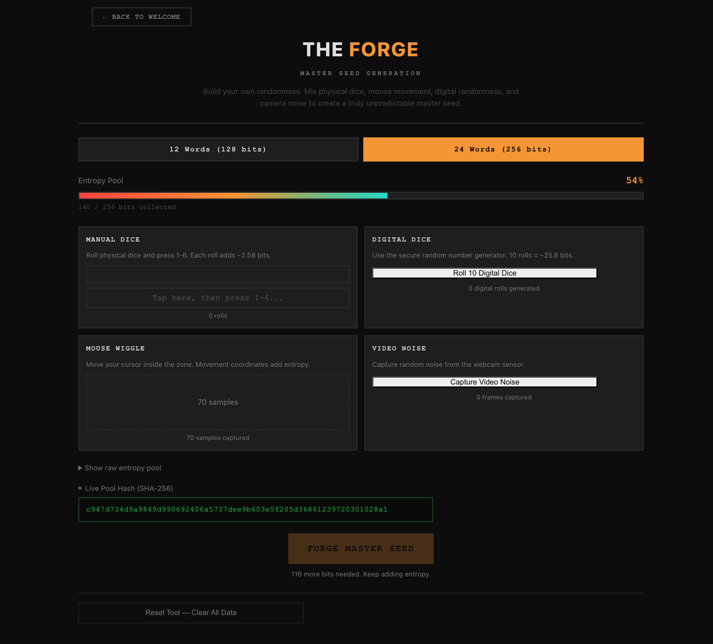

What’s inside the vault
Features
Engineered for isolation · Built for sovereignty
The Fortress
Every time you boot SafeKeepVault, networking is disabled, the internal drive is never mounted, and USB ports are locked down before any user code runs. There is nothing to configure and nothing to remember — the secure state is the default state, every single session.
- Zero network All networking and Bluetooth are disabled at the kernel level during the boot sequence, creating a pristine, verifiable air-gap.
- Disabled peripherals Wi-Fi, Bluetooth, microphones, and speakers stay cold. The vault speaks only to the keyboard, display, camera, and transfer drive.
- Host SSD untouched The internal NVMe or SATA drive is ignored entirely. Nothing on the host disk can be read, written, or contaminated.
- Amnesic sandbox Runs entirely in RAM. At power-down, the entire working state—seeds, PSBTs, clipboards, memory buffers—is permanently destroyed. Zero footprint.
- Plausible deniability No branded device, no custom hardware in a drawer. The vault is a thumb drive that looks exactly like any other thumb drive.
- Flexible unlock Decrypt the encrypted volume with a QR code scanned from your phone or a strong password at the keyboard—whichever suits your setup.
- Encrypted or ephemeral Save seed words to the encrypted vault for repeated use, or run the whole session in pure amnesic mode and leave nothing behind. The same OS does both.
A Complete Bitcoin Wallet and Toolkit for the Sovereign Individual
Fifteen discrete tools ship inside the .zip image, covering the full life cycle of a Bitcoin key: generate, back up, split, derive, transfer, sign, and hand down. Every tool is each one runs air-gapped, follows open Bitcoin standards, and produces output that any compatible wallet or coordinator can consume directly.
- The Scribe PSBT Signer
- The Witness BIP-322 Message Signing
- The Cipher Passphrase Library
- The Armory Key Management & Derivation
- The Script Output Descriptor Tool
- The Covenant SLIP-39 Shamir Backup
- The Shard Seed XOR
- The Forge Entropy Generator
- The Lineage BIP-85 Child Seeds
- The Glyph SeedQR Backup
- The Courier Optical Transfer
- The Archive Transfer Drive Manager
- The Reliquary Encrypted Backup
- The Codex Encrypted Notes
- The Cartographer Inheritance Recovery Map

Works With the Wallets You Already Use
SafeKeepVault is not a replacement for the wallet software you trust — it is the missing signing layer underneath it. Your favorite wallet handles balances, transaction history, address management, and network broadcast. SafeKeepVault handles the one thing those wallets cannot safely do on an internet-connected machine: holding your private keys and signing transactions completely offline.
The workflow is simple. Set up your wallet in watch-only mode using the xpub or output descriptor SafeKeepVault exports. Your wallet sees your full balance and can construct transactions, but holds no private keys and can sign nothing on its own. When you need to sign, the unsigned PSBT travels to SafeKeepVault via QR code or transfer drive, is signed air-gapped, and the signed transaction is returned the same way. Your wallet broadcasts it. Your keys never touch the internet.
For multisig wallets, SafeKeepVault goes further. Load your primary key from encrypted storage and apply the first signature. Then, without rebooting, load a second seed temporarily into memory — a co-signer key stored on paper, a Shamir share, or a key from a separate backup — and apply the second signature in the same session. The temporary seed exists only in RAM and is gone the moment you clear it or shut down. This means a single SafeKeepVault device can serve as multiple signers in a quorum, making 2-of-3 multisig workflows practical without the cost of dedicated hardware for every key.
- Sparrow Wallet The most capable desktop Bitcoin wallet for power users. Run Sparrow in watch-only mode on your everyday machine and use SafeKeepVault as its offline signer. Full PSBT round-trip via file or QR. Ideal for single-sig and multisig coordinators.
-
Electrum
A long-standing desktop wallet with
deep scripting and multisig support. SafeKeepVault exports
a ready-to-import
[FINGERPRINT]-electrum.jsonskeleton wallet file, and the built-in Base43 decoder handles Electrum’s proprietary QR format natively. - Nunchuk A mobile-first multisig coordinator available on iOS and Android. SafeKeepVault outputs Raw Hex QR codes that Nunchuk’s strict scanner accepts without any intermediate conversion. Scan, broadcast, done.
- Blue Wallet A popular mobile Bitcoin wallet for iOS and Android. Import your xpub into Blue Wallet as a watch-only vault, monitor your balance on your phone, and sign any outgoing transaction through SafeKeepVault before broadcasting.
What’s New in v1.1b
v1.1b conquers air-gap interoperability for the two strictest mobile and desktop wallet implementations in the ecosystem: Nunchuk and Electrum. Workflows that previously required manual conversion steps now complete in a single scan.
- Compat Flawless Nunchuk integration. SafeKeep outputs pure, un-prefixed Raw Hex QR codes. Nunchuk scans and broadcasts without any intermediate conversion step.
- Compat Complete Electrum round-trip. A custom Base43 decoder built into SafeKeep’s camera reads Electrum’s proprietary PSBT format natively — the last manual step is gone.
-
New
Electrum skeleton wallet export.
SafeKeep generates a
[FINGERPRINT]-electrum.jsonfile with the correct descriptor, derivation path, and little-endianckcc_xfpfield for instant watch-only wallet creation.
Download
Verify the signature against the maintainer's public key before writing the image to a USB drive. The verification guide walks through the procedure end to end.